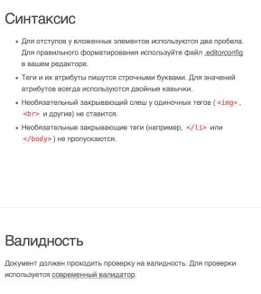
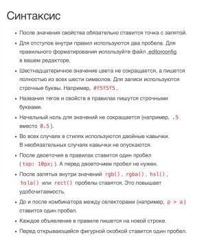
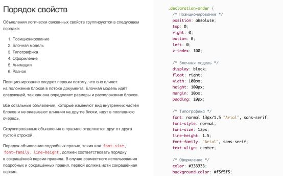
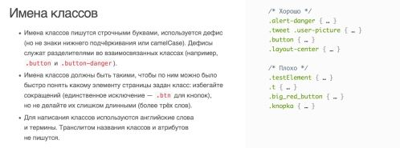

Инструменты
Привет! сегодня я хочу поговорить о процессе верстки, какие используются инструменты, какие есть стандарты, что такое качественна яверстка и т.п.
В первую очередь, хочу отметить что являюсь последователем питерской школы верстки.
Очень люблю красивую и семантичную верстку. Но обо всем по-порядку.
Хорошая разметка:
● Простая.
● Понятная.
● Читабельная.
● Логичная.
● Модульная (используются пространства имён).
Текущие реалии разметки:
● 90% — “бессмысленные” элементы с классами.
● 10% — осмысленные теги для разметки текста и создания логической структуры.
Типовые имена классов:
https://github.com/yoksel/common-words
Читать далее...
 Читать далее...
Минификация кода:
http://css.github.io/csso/csso.html
«Бьютифулизация» кода:
● http://www.lonniebest.com/FormatCSS/
● http://jsbeautifier.org/
Автопрефиксер:
http://autoprefixer.github.io/ru/
Codequide:
http://codeguide.academy/html-css.html
В коде предусмотрено даже то, что дизайнер
поленился или забыл нарисовать:
● состояния элементов при взаимодействии
(наведение, тап, фокус и так далее);
● состояния элементов, зависящие от бизнес-
логики сайта (авторизация, добавление товара в корзину и так далее).
Читать далее...
Минификация кода:
http://css.github.io/csso/csso.html
«Бьютифулизация» кода:
● http://www.lonniebest.com/FormatCSS/
● http://jsbeautifier.org/
Автопрефиксер:
http://autoprefixer.github.io/ru/
Codequide:
http://codeguide.academy/html-css.html
В коде предусмотрено даже то, что дизайнер
поленился или забыл нарисовать:
● состояния элементов при взаимодействии
(наведение, тап, фокус и так далее);
● состояния элементов, зависящие от бизнес-
логики сайта (авторизация, добавление товара в корзину и так далее).
Детали бизнес-логики
Что будет, когда пользователь залогинится?
 Все состояния пунктов меню свёрстаны? Как будет выглядеть активный пункт меню?
Как добавить товар в корзину понятно, а как потом убрать?
Все состояния пунктов меню свёрстаны? Как будет выглядеть активный пункт меню?
Как добавить товар в корзину понятно, а как потом убрать?

● ARTICLE — самостоятельный, независимый, отчуждаемый «кусок» содержимого.
● SECTION — составная часть чего-либо, может именоваться.
● DIV — чисто декоративное назначение,
никакой семантики.
Зачем нужны пространства имён?
1. Упрощают именование классов.
2. Разбивают код на независимые блоки.
3. Предотвращают нежелательное
перемешивание стилей.
4. Ускоряют разработку и упрощают поддержку.
Холиварная часть
1. Разделитель в именах классов: some_class, some-class, someClass?
2. Пробел или табуляция?
3. Размер отступов 2 или 4 пробела? А может
быть таб?
4. Как сортировать CSS-свойства: по алфавиту
или по назначению?
Кодгайды
Кодгайд от HTML Academy
http://html-academy.ru/codeguide/
Кодгайд от MDO
http://mdo.github.io/code-guide/
Кодгайд от GOOGLE
https://google.github.io/styleguide/htmlcssguide.xml
Idiomatic CSS
http://github.com/necolas/idiomatic-css/
Синтаксис HTML

Оформление CSS

Порядок CSS-свойств в правилах


MDO: нет сокращённой записи свойств!
 Проверка качества кода.
Проверка качества кода.
Технология HTML: что мы видим на странице? Описание сущностей (перечисление объектов):
1. шапка, логотип, навигация, меню состоящее из n пунктов, блок корзина, кнопка вход)
2. Блок Новости, состоящий из заголовка, абзаца, даты и кнопки.
Изображения - экспорт.
#9 Экспорт графики
1. Прозрачности можно реализовать свойством opacity CSS
2. Спрайты создаются с помощью инструмента: https://spritegen.website-performance.org
Технология CSS: как оно выглядит?
2. Сетка (блочная верстка)
#4 Слои в Фотошопе
#5 Получение данных о тексте
#6 Получение цвета элементов
#7 Измерение расстояний
#8 Особенности изображений
Декоративные элементы (включая position:absolute;)
Верстка текстовых страниц
Верстка всплывающих окон
Подключение Javascript
Прогрессивное улучшение